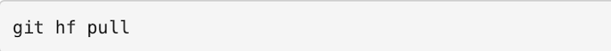

Using GitFlow With GitHub
Introduction:
This is our recommended workflow for using:
The Poster

Created in Inkscape.
The key points are:
- Don’t fork repos on GitHub - clone the master repo directly
- Push feature branches back to origin repo so others can collaborate
- Use the GitHub website to create pull requests from feature branches
- Don’t accept your own pull requests!
1. Cloning A Repo:
Please remember:
- Do not fork the repo on GitHub - clone the master repo directly.
2. Initialise The HubFlow Tools:
The HubFlow tools need to be initialised before they can be used:
Please remember:
- You have to do this every time you clone a repo.
3. Create A Feature Branch:
If you are creating a new feature branch, do this:
If you are starting to work on an existing feature branch, do this:
Please remember:
- All new work (new features, non-emergency bug fixes) must be done in a new feature branch.
- Give your feature branches sensible names. If you’re working on a ticket, use the ticket number as the feature branch name (e.g. ticket-1234).
- If the feature branch already exists on the master repo, this command will fail with an error.
4. Publish The Feature Branch On GitHub:
Push your feature branch back to GitHub as you make progress on your changes:
5. Keep Up To Date:
You’ll need to bring down completed features & hotfixes from other developers, and merge them into your feature branch regularly. (Once a day, first thing in the morning, is a good rule of thumb).

6. Collaborate With Others:
Pull your colleague’s changes back to your local clone:

7. Merge Your Feature Into Develop Branch:
Then, use the GitHub website to create a pull request to ##reponame##/develop branch from ##reponame##/feature/##feature-name##.
Ask a colleague to review your pull-request; don’t accept it yourself unless you have to. Once the pull request has been accepted, close your feature using the HubFlow tools:
8. Creating Releases:
When you have enough completed features, create a release branch:
Release branches are given version numbers for name. For example:
creates the branch release/2.6.0.
Once you’ve created the release branch, remember to update the version number in your code (in the pom.xml, Makefile, build.xml or wherever it is stored).
Build the code, deploy it into test environments, find bugs. Fix the bugs directly inside the release branch. Keep building, deploying, debugging, fixing until you’re happy that the release is ready.
When you’re ready to tag the release and merge it back into master and develop branches, do this:
This closes the release branch and creates a tag called ##version-number## against the master branch.
9. Creating Hotfixes:
A hotfix (not shown on the diagram at the top of this page) is a special kind of release. Unlike features and releases (which are branched from develop), hotfixes are branched from master. Use hotfixes when you want to make and release an urgent change to your latest released code, and you don’t want the changes currently in develop to ship yet.
To create a new hotfix:
This creates a new branch called hotfix/##version-number##, off of the latest master branch.
Once you’ve created the hotfix branch, remember to update the version number in your code (in the pom.xml, Makefile, build.xml or wherever it is stored).
Edit the code, build it, deploy it into test environments, make sure that your hotfix works. Keep editing, building, deploying, debugging and fixing until you’re happy that the hotfix is ready. Remember that you can use the git merge command if you need to merge changes from a feature branch into the hotfix that you are preparing.
When you’re ready to tag the hotfix and merge it back into master and develop branches, do this:
This closes the hotfix branch and creates a tag called ##version-number## against the master branch.